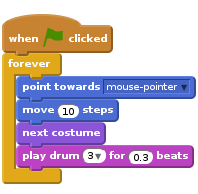
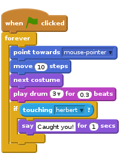
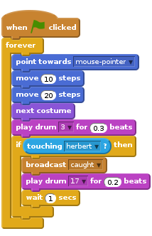
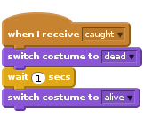

Introduction
We are going to make a game of catch with Felix the cat and Herbert the mouse. You control Herbert with the mouse and try to avoid getting caught by Felix. The longer you avoid him the more points you score, but don’t get caught because your score will go down!

Step 1: Felix follows the mouse pointer
Activity Checklist
- Start a new project.
- Click on the stage next to the sprite and switch to the
Backdropstab, and then click theChoose Backdrop from librarybutton and choose the backdrop indoors/hall. Delete the original blank backdrop. - Click on the sprite, and then click on the
ibutton to the top left of the Sprite. Change the name of the sprite to Felix. - Make sure Felix only points left-right by clicking this button:

Create this script:

Test your project
Click the green flag.
- Does Felix follow the mouse pointer?
- Does it look like he’s walking when he moves?
- Does he move at the right speed?
Save your project
Step 2: Felix chases Herbert
Next, we want Felix to chase Herbert the mouse, rather than the mouse pointer.
Activity Checklist
- Create another sprite using the
choose sprite from librarybutton and selecting animals/mouse1. - Change the name of the sprite to Herbert.
- Switch to the Costumes tab, then click on the costume in the Paint Editor. A box will appear around the costume. Drag a corner of the box to make Herbert smaller than Felix.
Make sure Herbert only points left-right by clicking this button:
Give Herbert this script:
![when FLAG clicked
forever
go to [mouse-pointer v]
point towards [Felix v]
end](1af06af900414a111b92ace85ff23a26673e6350.png)
Test your project
Click the green flag.
- Does Herbert move with the mouse pointer?
- Does Felix chase Herbert?
Save your project
Step 3: Felix says when he’s caught Herbert
We want Felix to know when he’s caught Herbert, and tell us.
Activity Checklist
Change Felix’s script to be this:

Test your project
Click the green flag.
- Does Felix say when he’s caught Herbert?
Save your project
Step 4: Herbert turns into a ghost when he’s caught
Instead of Felix saying something, we want Herbert to turn into a ghost when he’s caught.
Activity Checklist
Change Felix’s script to send this message when he catches Herbert:

- Add a new costume into Herbert by selecting Herbert, going into the Costumes section, and clicking the
Choose costume from Library button. Select the fantasy/ghost2-a costume. - Make the costume smaller by clicking on it in the Paint Editor, and dragging the box that appears, to resize it.
- Change the names of Herbert’s costumes so the mouse costume is called ‘alive’ and the ghost costume is called ‘dead’.
Create a new script for Herbert to turn him into a ghost:

Test your project
Click the green flag.
- Does Herbert turn into a ghost when he’s caught?
- Does Felix play the right sounds at the right time?
- Does Felix still stay still for long enough for Herbert to get away?
Save your project
Step 5: Keep score
Let’s add a score so we know how well we do at keeping Herbert alive.
We’ll start the score at zero and increase it by one every second. If Felix catches Herbert, we’ll reduce the score by one hundred.
Activity Checklist
- Make a variable, for all sprites, called Score. Click on
Datain the top menu, make a variable and name itscore, ensuring that “For all sprites” is selected. On the stage, create these two scripts:
![when gf clicked
set [score v] to [0]
forever
change [score v] by (1)
wait (1) secs
end
when I receive [caught v]
change [score v] by (-100)](9a999bc0001933acd2890f8b6485fd3397d6df76.png)
Test your project
Click the green flag.
- Does the score go up by one every second?
- Does the score go down by one hundred when Herbert is caught?
- What happens when Herbert is caught before score reaches one hundred? Does the score go back to zero when you start a new game?
Save your project
Well done, you’ve finished! Now you can enjoy your game!
Don’t forget you can share your game with all your friends and family by clicking on Share on the menu bar!